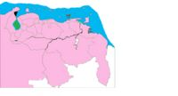

De: La Frikipedia, la enciclopedia extremadamente seria.
De: La Frikipedia, la enciclopedia extremadamente seria. De: La Frikipedia, la enciclopedia extremadamente seria.

|
ATENCIÓN El autor de este artículo pide una ayudita. Porque es más triste de robar que de pedir. Se le han terminado las ideas y pide de rodillas a los frikipedistas (más listos, inteligentes y guapos que él) que le ayuden a terminar o mejorar su obra. |
| De la serie Países del planeta tierra: | |||||
| Nueva Esparta | |||||
|---|---|---|---|---|---|
| |||||
| Lema: no hay mejores islas que las nuestras | |||||
| Himno: himno a | |||||
| 
| |||||
| Capital | la asuncion | ||||
| Mayor ciudad | la asuncion | ||||
| Lenguas oficiales | Español | ||||
| Gobierno | Socialismo del Siglo XXI/Comunismo | ||||
| Cualquier comunista es el dueño | |||||
| Área | el 30% de Guyana | ||||
| Población | 1.000.000 | ||||
| Moneda | El Bolivar Fuerte (porque se desarma la moneda) | ||||
| Zona horaria | -1 | ||||
| Dominio Internet | VE | ||||
| Código telefónico | 2 algo hay
| ||||
| No es un pais son solo 3 islas | |||||
El estado, Nueva Esparta, lo encontraron unos europeos en 1500, fue llamado asi por ¿ehhhhhhh?, ¿ahhhhhhhhhhhh? (inventa una cosa en tu mente de el porque le pusieron ese nombre), descubierto despues de que colon queria una isla cercana a tierra y que fuera enorme, pero nunca la encontro, los noruegos de Dinamarca la encontraron primero, pero para en esa epoca no decirle a nadie lo que buscaba, se independizo y se anexo a Venezuela en 1500 y un mes.
Contiene la perla del Caribe, llamada Margarita, que tambien es la ciudad turistica mas grande del pais, y contiene uno de los tres acuarios del pais.
En esta isla los venezolanos rebajaron los impuestos, arreglaron las playas y ahora es el lugar mas visitado del pais, esta en frente el estado Anzoátegui y tambien es petrolero como todos los demas del pais, aqui llegan a parar varios barcos o como les llaman hay, Conferry o Granferry, tambien llegan cruseros para hacer un tour por la ruta del sol.
Esta es la isla y ciudad mas grande de este estado, contiene la mayor cantidad de turistas, con el unico acuario del oriente de Venezuela
otra de las islas. a esta se le realizan programas como: ayudemos a los niños de cohe o en el 2021 denle todo a chavez
la isla mas pequeña, olvidada e ignorada. casi nadie vive hai y a casi nadie le importa aunque antes era la isla mas importante porque en esta se sacaba muchas perlas, pero como se acabaron...
Autor(es):